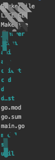
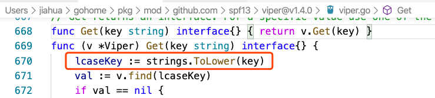
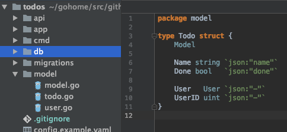
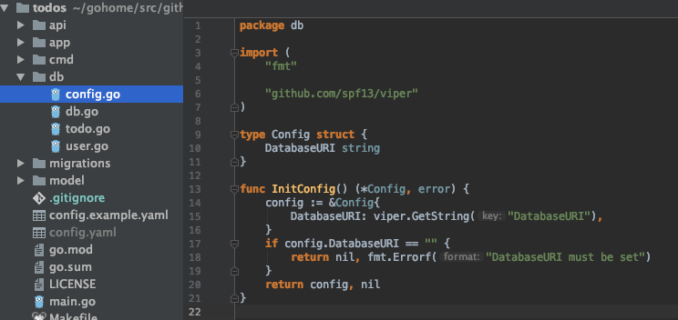
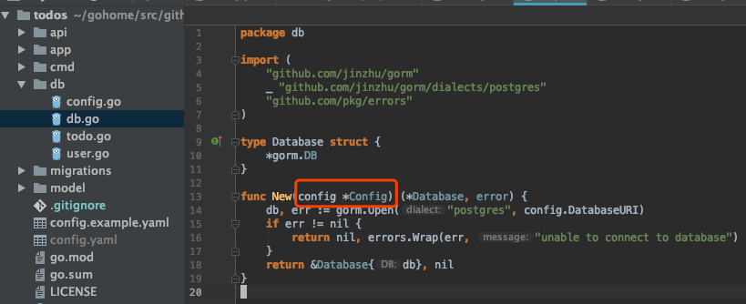
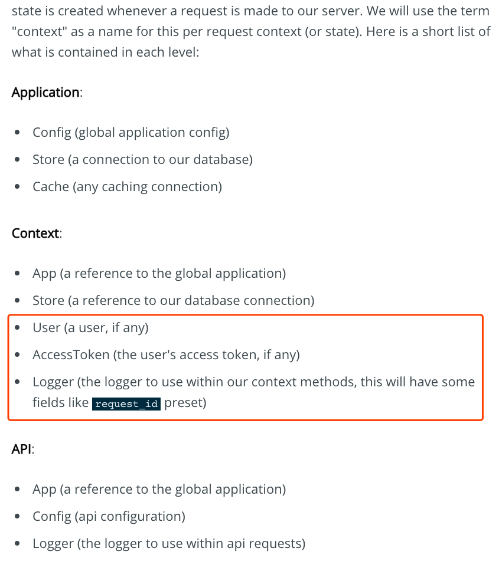

常用开源库
依赖包管理 Go Modules
Go Modules。Go 从1.11版本开始支持，Go 1.14被认为是生产可用了。个人用过最方便的Go依赖包管理工具了。
版本管理中维护 go.mod/go.sum 两个文件。

参考
- Using Go Modules https://blog.golang.org/using-go-modules
命令行框架 Corba
Corba。第一次看到，是在翻看 Hyperledger Fabric 的时候。

- 子命令，嵌套的子命令。
- 增强版本的flags。
- 项目模板的生成工具。
- 生成工具也自动引入了Viper这个包。Corba与Viper由一个作者开发，两个项目配合使用非常方便。
建议使用Cobra命令行工具生成项目模板。
▾ appName/
▾ cmd/
add.go
your.go
commands.go
here.go
main.go
参考
- A Commander for modern Go CLI interactions https://github.com/spf13/cobra
- Cobra Generator https://github.com/spf13/cobra/blob/master/cobra/README.md
配置管理 Viper
Viper。常常与Corba搭配使用。抄一段官方简介：

Viper is a complete configuration solution for Go applications including 12-Factor apps. It is designed to work within an application, and can handle all types of configuration needs and formats. It supports:
- setting defaults 设置默认值。示例：
viper.SetDefault("subject", "World") - reading from JSON, TOML, YAML, HCL, envfile and Java properties config files 支持各种配置文件格式，TOML比较合我口味。在使用viper之前的配置文件读取方式，一般都是配置文件对应一个Go的model，通过反序列化读入程序。现在看来非常粗糙。
- live watching and re-reading of config files (optional)
- reading from environment variables 读取环境变量。代码和配置严格分离，配置文件算是一种不错的选择，12-Factor更推荐将应用的配置存储于环境变量中，参考：https://12factor.net/zh_cn/config
- reading from remote config systems (etcd or Consul), and watching changes 读配置中心。
- reading from command line flags 示例：
viper.BindPFlag("subject", helloCmd.Flags().Lookup("subject")) - reading from buffer
- setting explicit values
Viper can be thought of as a registry for all of your applications configuration needs.
关于读环境变量
AutomaticEnv is a powerful helper especially when combined with SetEnvPrefix. When called, Viper will check for an environment variable any time a viper.Get request is made. It will apply the following rules. It will check for a environment variable with a name matching the key uppercased and prefixed with the EnvPrefix if set.
环境变量名是有要求的，默认是大写+下划线组合。如果设置了EnvPrefix，环境变量名需要加上前缀加下划线。
vip.GetXXX(var) 这里的var倒是大小写随意的，因为viper内部统一小写处理。

如果环境变量名并不满足组合怎么办呢。使用BindEnv，绑定key与环境变量名之间的关系，而不是使用默认的约定。
BindEnv takes one or two parameters. The first parameter is the key name, the second is the name of the environment variable. The name of the environment variable is case sensitive. If the ENV variable name is not provided, then Viper will automatically assume that the ENV variable matches the following format: prefix + “_” + the key name in ALL CAPS. When you explicitly provide the ENV variable name (the second parameter), it does not automatically add the prefix. For example if the second parameter is “id”, Viper will look for the ENV variable “ID”.
参考
- Go configuration with fangs https://github.com/spf13/viper
日志 logrus
Logrus提供的日志功能很丰富。

- JSON、TEXT格式输出。JSON很方便解析，配合ES存储日志。
参考
- Structured, pluggable logging for Go. https://github.com/sirupsen/logrus
路由库 grollia mux
摘抄官方：

Package gorilla/mux implements a request router and dispatcher for matching incoming requests to their respective handler.
The name mux stands for “HTTP request multiplexer”. Like the standard http.ServeMux, mux.Router matches incoming requests against a list of registered routes and calls a handler for the route that matches the URL or other conditions. The main features are:
- It implements the
http.Handlerinterface so it is compatible with the standardhttp.ServeMux. Go 提供的http.Handler 接口太具有扩展性了。 - Requests can be matched based on URL host, path, path prefix, schemes, header and query values, HTTP methods or using custom matchers. 丰富的路由匹配规则，host、path、header、query string都可以。
- URL hosts, paths and query values can have variables with an optional regular expression.
- Registered URLs can be built, or “reversed”, which helps maintaining references to resources.
- Routes can be used as subrouters: nested routes are only tested if the parent route matches. This is useful to define groups of routes that share common conditions like a host, a path prefix or other repeated attributes. As a bonus, this optimizes request matching. 分组功能，RESTful接口按照实体分组，很实用。
可以搭配同系列的middleware项目使用：https://github.com/gorilla/handlers。
参考
- A powerful HTTP router and URL matcher for building Go web servers https://github.com/gorilla/mux
- A collection of useful middleware for Go HTTP services & web applications https://github.com/gorilla/handlers
- Web Server Graceful Shutdown https://github.com/gorilla/mux#graceful-shutdown
ORM gorm
文档很丰富。功能很实用。摘抄官方文档：
- Full-Featured ORM (almost)
- Associations (Has One, Has Many, Belongs To, Many To Many, Polymorphism)
- Hooks (Before/After Create/Save/Update/Delete/Find)
- Preloading (eager loading)
- Transactions
- Composite Primary Key
- SQL Builder
- Auto Migrations 自动创建表结构。
- Logger
- Extendable, write Plugins based on GORM callbacks
- Every feature comes with tests
- Developer Friendly
参考
- GORM Guides https://gorm.io/docs/
HTTP client grequests
号称 Python Requests 的Go clone。用着不错。
参考
- A Go “clone” of the great and famous Requests library https://github.com/levigross/grequests
Errors github.com/pkg/errors
内置的errors太弱了。返回了error，但是呢，没有返回上下文信息。这个库解决的是这个问题。
参考
- Simple error handling primitives https://github.com/pkg/errors
依赖注入框架 wire
基于代码生成的依赖注入框架。小项目没必要使用。
RPC框架 gRPC
跨进程，跨语言通信。
常用工具
Makefile
将常用的命令放在Makefile里管理。比如格式化代码 ，编译，打包，开发环境运行等等，并维护好依赖关系。
不要写一堆.sh脚本了。
Docker
维护一份Dockerfile，项目交付物通过制作成Docker镜像分发。比如：
# Dockerfile
FROM alpine:latest
WORKDIR /app
COPY ./dist .
ENTRYPOINT ["./app", "serve"]
可以通过Docker来构建Go项目（一个两阶段的Dockerfile）。也可以像我这样，在宿主机就构建好，Dockerfile只需要COPY编译产物即可。
Swagger
目前没有方便的生成方法，得手写注释！
项目结构
Go web项目结构没有定式，每个人的风格都不一样。参考了这个系列文章，觉得不错，特别是第二篇。
- Go Web Application Structure - Part 1 https://aaf.engineering/go-web-application-structure-pt-1/
- Go Web Application Structure - Part 2 - Routing/Serving https://aaf.engineering/go-web-application-structure-part-2/
- Go Web Application Structure - Part 3 - The Database https://aaf.engineering/go-web-application-structure-part-3/
- Go Web Application Structure - Part 4 - Database Migrations & Business Logic https://aaf.engineering/go-web-application-structure-part-4/
- code https://github.com/theaaf/todos
层级调用链：cmd -> api -> app -> db。model/config横切，其它层共享之。
model: database models
模型实体，通过分析需求建模，合理的建模便于后期维护。
横切层。其他每层都会用到。

config
横切层。
并没有自己独立的包，而是其他每层都可以根据需要，有一个自己独立的Config结构体。通过一个全局的Viper变量，取出该层关心的配置变量（或是从配置文件，或是从环境变量）。
比如数据层的config：

db: database operations
数据持久化层，底层。CRUD操作的封装。通过“构造函数”做依赖注入，方便单元测试。

app: business logic
业务逻辑层，中层，核心层。调用数据层，及其他底层服务，比如S3云存储等。
三类错误
该层方法返回的错误可以分三类。
- ValidationError 输入不正确，校验不通过，比如手机号长度不对。对应的HTTP状态码：400。
- UserError 认证错误，比如用户登录失败，用户没有权限。对应的HTTP状态码：401, 403。
- ServerError 系统错误，比如数据库连不上，也不需要特别定义ServerError：只要error不是ValidationError，UserError，就是ServerError。对应的HTTP状态码：500。
- 没有错误，那么对应的HTTP状态码就是200。
api: api controllers
接口层。尽可能轻量，尽可能没有业务逻辑，只负责转译。通过调用业务逻辑层完成任务。将上述三分类错误映射到合适的状态码。
Application State vs. Request State
请求入口函数需要为每个请求创建一个context（上下文）。context包含如下，摘抄原文。包含的字段需满足完成request的所需。

(Request) Context 请求上下文信息
- Remote IP地址，显示于access log。使用logrus.WithField()。
- Request ID，显示于access log。使用logrus.WithField()。
- User，用于后续鉴权。如果有认证头信息（Auth Token），从数据库取出用户。
cmd: command line methods
使用Cobra生成子命令。
app serve
启动web server，并加入web server优雅退出的功能。
Last modified on 2020-03-20